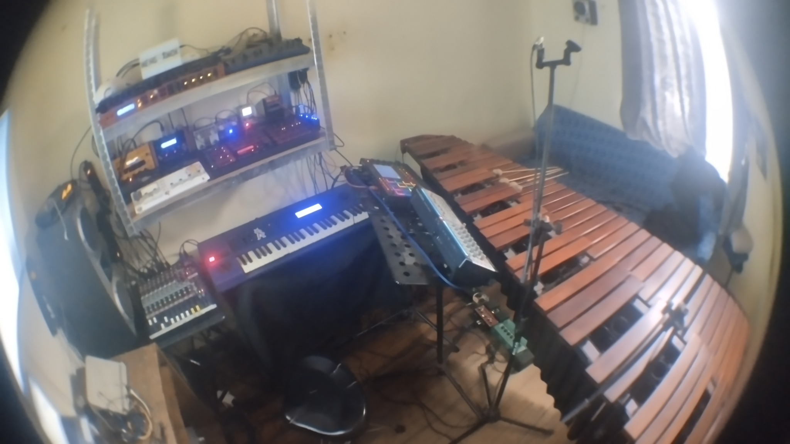

Minimal Marimba
Percusión contemporánea & Experimentación electrónica
Minimal Marimba es un proyecto artístico que explora las fronteras entre la percusión clásica y el universo de la electrónica contemporánea. Nacido de la visión de Cristóbal Nicolás Zurita Quintanilla (Santiago de Chile, 1984), este proyecto transforma el diálogo entre tradición e innovación en una experiencia sonora única y evocadora.
El núcleo de esta propuesta artística se articula en torno a dos ejes fundamentales: la profunda tradición de la percusión clásica, materializada en el cálido timbre de la marimba, y la vanguardia sonora de la electrónica, expresada a través de sintetizadores y procesamiento digital. Lejos de ser una mera superposición, esta dualidad genera un lenguaje sonoro propio donde las texturas acústicas y electrónicas se entrelazan orgánicamente, creando paisajes sonoros inéditos.
Como extensión natural de esta exploración, el proyecto paralelo Meng-Âmok profundiza en la vertiente electrónica, transitando desde atmósferas ambientales etéreas hasta construcciones rítmicas más intensas inspiradas en el acid house y el drum and bass. Esta rama mantiene siempre un vínculo con la cualidad percusiva y textural de la marimba, estableciendo un puente entre ambos universos sonoros.
El nombre "Minimal Marimba" evoca tanto la estética minimalista presente en parte de su repertorio como la búsqueda de la esencia sonora, destilando complejidades en elementos expresivos esenciales. El resultado son composiciones e interpretaciones que invitan a una escucha contemplativa y a una inmersión sensorial profunda, donde cada resonancia adquiere un significado propio dentro del conjunto.
Evolución del Proyecto
Formación y Fundamentos (1990-2005)
Las raíces de Minimal Marimba se encuentran en la formación musical de Cristóbal Zurita, iniciada en el Colegio Oratorio Don Bosco (1990-1998), donde desarrolló su temprana pasión por la percusión desde primero básico hasta primero medio. Esta vocación se consolidó durante sus estudios en el Instituto Secundario de la Universidad de Chile (ISUCH, 1999-2001) y bajo la tutela de la profesora Elena Corvalán en la cátedra de percusión clásica de la Universidad de Chile (1999-2005). Durante este período, enriqueció su técnica a través de diversos seminarios internacionales, destacando su inmersión en la percusión afrocubana en La Habana, Cuba (enero 2001) y su formación específica en marimba en Viña del Mar, Chile (enero 2004), donde trabajó con maestros de la talla de Rebecca Kite y Fernando Hashimoto. Esta etapa fundacional estableció los sólidos cimientos técnicos sobre los que posteriormente se desarrollaría el proyecto.
Diversificación y Experimentación (2003-2013)
A partir de 2003, la trayectoria artística de Cristóbal se expandió hacia nuevos territorios sonoros, creando un diálogo entre su formación clásica y su experiencia como baterista en diversos proyectos de música amplificada, con particular relevancia su participación en la banda de death metal Anima Inmortalis (2003-2007). Paralelamente, inició una profunda exploración del universo de la música electrónica, los sintetizadores y la tecnología MIDI, desarrollando un conocimiento técnico y estético que sentaría las bases para sus futuras creaciones. Esta etapa de experimentación le permitió integrar lenguajes musicales aparentemente distantes, descubriendo puntos de convergencia e interacción que enriquecerían su propuesta artística.
Desarrollo de Meng-Âmok (2013-2019)
El año 2013 marca el nacimiento oficial de Meng-Âmok como vertiente dedicada a la exploración electrónica dentro del proyecto. Durante este período, Cristóbal desarrolló un lenguaje sonoro distintivo que transita fluidamente desde paisajes ambientales contemplativos hasta estructuras rítmicas complejas inspiradas en el techno, acid house y drum and bass. Esta fase se caracterizó por una intensa experimentación con diversos sintetizadores y técnicas de producción, creando un corpus de trabajo que establecería las bases para la posterior integración con la expresividad acústica de la marimba. En marzo de 2019, realizó un perfeccionamiento en tecnología MIDI con Ernesto Romeo en Buenos Aires, Argentina, ampliando significativamente sus recursos técnicos para la producción electrónica. La evolución de Meng-Âmok representa un laboratorio sonoro donde las texturas electrónicas se moldean manteniendo siempre una conexión con la sensibilidad percusiva.
Minimal Marimba: Síntesis e Integración (2020-Presente)
Desde 2020, el proyecto cristaliza bajo el nombre Minimal Marimba, inaugurando una etapa de plena integración entre los universos acústico y electrónico. Durante ese mismo año, Cristóbal realizó un perfeccionamiento en marimba con el Profesor Rodrigo Kanamori, seguido en 2021 por estudios avanzados con el Profesor Joaquín López (Universidad Católica de Chile). En abril de 2022, completó su formación en técnicas de síntesis (aditiva, sustractiva y FM) con Ernesto Romeo en Buenos Aires, Argentina, consolidando así su dominio de las herramientas electrónicas. Esta fase se materializa en una serie de presentaciones e intervenciones que fusionan orgánicamente la calidez tímbrica de la marimba con la riqueza textural de la electrónica. El repertorio se expande para incluir tanto interpretaciones de obras clásicas de compositores como Paul Smadbeck, Keiko Abe y J.S. Bach, como adaptaciones orquestales mediante sintetizadores de piezas emblemáticas como el Concierto de Brandenburgo N°3 o la Danza del Sable de Aram Khachaturian. Esta síntesis representa la culminación de un largo proceso de exploración, donde las diferentes influencias y experiencias convergen en un lenguaje artístico coherente y personal.
Proyectos Destacados
- Repertorio Marimba: Interpretaciones del repertorio clásico y contemporáneo que revelan la profundidad expresiva del instrumento en su forma acústica pura.
- Meng-Âmok: Exploración electrónica que navega entre paisajes ambientales, texturas techno, acid house y estructuras rítmicas del drum and bass.
- Orquestaciones electrónicas: Reinterpretación de obras orquestales clásicas mediante sintetizadores, creando nuevas perspectivas tímbricas sobre composiciones atemporales.
- Intervenciones en espacios públicos: Presentaciones en entornos urbanos que democratizan el acceso a la música de marimba y difunden nuevas formas de escucha.
- Performances híbridas: Actuaciones que integran en tiempo real la marimba acústica con procesamiento electrónico, generando diálogos sonoros únicos entre ambos mundos.
El Puente Entre Mundos Sonoros
Minimal Marimba emerge como un portal entre universos sonoros aparentemente distantes, tejiendo un diálogo orgánico entre la expresividad táctil de la marimba y el vasto horizonte de posibilidades que ofrece el paisaje electrónico. Esta propuesta trasciende la mera experimentación: se constituye como un puente que invita al público a transitar por experiencias sonoras que habitualmente permanecerían confinadas en circuitos especializados, democratizando así el acceso a nuevos territorios auditivos.
El proyecto reformula el repertorio clásico a través de innovadoras perspectivas tímbricas, mientras explora simultáneamente el lenguaje contemporáneo mediante composiciones electrónicas y transformaciones orquestales realizadas con sintetizadores. Este enfoque dual honra la profundidad de la tradición musical al tiempo que la proyecta hacia fronteras expresivas inexploradas. En resonancia con la obra de J.S. Bach —figura cardinal en el repertorio del proyecto— Minimal Marimba persigue el delicado equilibrio entre la precisión matemática de las estructuras musicales y la libertad interpretativa que caracteriza al maestro barroco.
La elección deliberada de manifestarse en espacios abiertos y contextos no convencionales materializa esta filosofía de democratización de la experiencia musical. Cada intervención constituye una invitación al descubrimiento colectivo, donde los oyentes pueden navegar desde territorios familiares hacia lo desconocido, expandiendo su percepción sonora y participando activamente en una experiencia estética transformadora. En esta aproximación, Minimal Marimba concibe la tradición no como un anclaje sino como punto de partida para una exploración que entrelaza lo ancestral con lo contemporáneo, generando nuevas narrativas que disuelven las fronteras entre épocas, estilos y tecnologías sonoras.